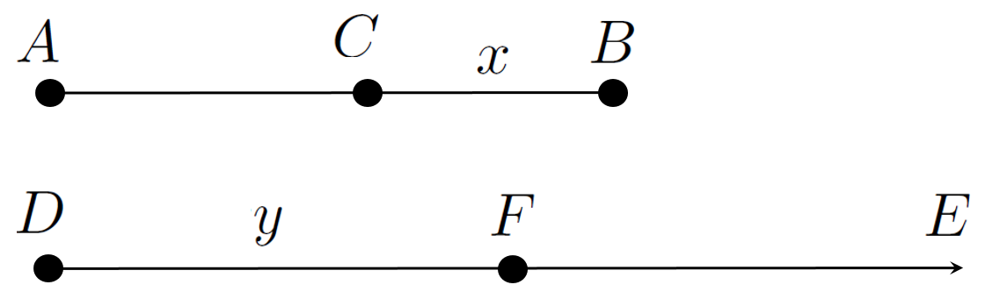

Section 8.12 General Logarithms and Exponentials
Subsection 8.12.1 General Exponentials
You have no idea how much poetry there is in the calculation of a table of logarithms!―Carl Friederich Gauss (1777–1855)
So far we’ve focused on the natural exponential and logarithm functions. But we’ve seen that \(2^x\) and \(10^x\) are also exponentials, with inverses \(\log_2(x)\) and \(\log_{10}(x) \text{.}\) In fact, we’ve seen that for any \(a\gt 0\text{,}\) \(a\neq1\text{,}\) \(a^x\) is the “base \(a\)” exponential and the corresponding inverse function is called the “base \(a\)” logarithm, and is denoted \(\log_a(x)\text{.}\)
Calculus is not needed for the next problem which establishes that all logarithm functions change multiplication into addition (Property 4) and exponentiation into multiplication (Property 6) as we stated (but didn’t prove) earlier.
Problem 8.12.2.
(a)
Show that \(\log_a(xy)=\log_a(x)+\log_a(y).\)
(b)
Show that \(\log_a(x^c) =c \log_a(x).\)
But if there are so many different exponential and logarithm functions, don’t we need differentiation rules for all of them? If so, what are the derivatives of the other exponentials and logarithms?
It is not as hard to differentiate \(y=a^x\) as you might think. Since we already know how to differentiate the natural exponential all we have to do is re–express \(y=a^x\) in terms of \(e^x\text{.}\) Here’s how to do that. Recall from Property 2 that \(a=e^{\ln(a)}\text{.}\) So we make that substitution to get
\begin{equation*}
y=a^x=\left(e^{\ln(a)}\right)^x=e^{x\ln(a)}
\end{equation*}
Aside: Comment.
Now differentiate:
\begin{align*}
a^x\amp =e^{x\ln(a)}\\
\dx(a^x) \amp = \dx{\left(e^{x\ln(a)}\right)}= e^{x\ln(a)}\dx(x\ln(a)).
\end{align*}
Since \(a\) is a constant, \(\ln(a)\) is also a constant so
\begin{equation*}
\dx(a^x) = e^{x\ln(a)}\ln(a)\dx{x},
\end{equation*}
and since \(a^x=e^{x\ln(a)}\) we have
\begin{equation}
\dx(a^x) = a^x\ln(a)\dx{x}.\tag{8.29}
\end{equation}
Many people simply memorize this formula and you are welcome to do that if you like. However we (the authors) prefer to emulate nature and be lazy. We find it much simpler to find the derivative of \(a^x\) by rewriting it as \(e^{x\ln(a)}\) first.
The following problem shows an alternative (and equivalent) method if you can’t remember how to rewrite \(a^x\text{.}\)
Drill 8.12.3.
Starting with \(y=a^x\text{,}\) take the natural logarithm of both sides and solve for \(\dx{y}\) to obtain equation (8.29) in a different way.
Taking a logarithm of complicated formulas sometimes allows us to simplify things considerably via the properties of logarithms. It is a nice trick. Keep it in mind.
Drill 8.12.4.
Find \(\dx{y}\) and \(\dfdx{y}{x}\) for each of the following:
-
\(\displaystyle y=2^x\)
-
\(\displaystyle y=3^x\cdot3^x\)
-
\(\displaystyle y=x3^x\)
-
\(\displaystyle y=e^{5^x}\)
-
\(\displaystyle y=\ln\left(2^x\right)\)
-
\(\displaystyle y=3\cdot7^x+7\cdot3^x\)
-
\(\displaystyle y=2^x\cdot 3^x\)
-
\(\displaystyle y=\frac{2^x}{3^x}\)
-
\(\displaystyle y=2^x\cdot4^x\cdot8^{x^2}\)
Subsection 8.12.2 General Logarithms
Just as we computed the derivative of the general exponential, \(a^x\) by re-expressing it as a natural exponential, we will compute the derivative of the general logarithm, \(\log_a(x)\text{,}\) by re-expressing it as a natural logarithm. This is a bit more difficult, but only a bit.
We begin with the exponential. If \(y=\log_a(x)\) then \(a^y=x\text{.}\) Taking the natural logarithm of both sides of \(a^y=x\) and using Property 6 we have, \(y\ln(a)=\ln(x)\text{,}\) or \(y=\frac{\ln(x)}{\ln(a)}\text{.}\) Since \(y=\log_a(x)\) we have successfully re-expressed the base–\(a\) logarithm as a natural logarithm:
\begin{equation}
\log_a(x)=\frac{\ln(x)}{\ln(a)}.\tag{8.30}
\end{equation}
This is why many scientific calculators don’t bother including a \(\log_a(x)\) button.
An easy mnemonic for remembering this formula is to simply notice that on both sides of the equation the \(a\) appears lower than the \(x\text{.}\)
Since \(\ln(a)\) is a constant (why?) we have
\begin{equation*}
\dx{(\log_a(x))}=\frac{1}{\ln(a)}\cdot\dx\left(\ln(x)\right)=\frac{1}{\ln(a)}\cdot\frac1x\dx{x}.
\end{equation*}
So we have the differentiation formula:
\begin{equation*}
\dfdx{(\log_a(x))}{x}=\frac{1}{x\ln(a)}.
\end{equation*}
As with the differentiation formula for general exponential functions we (the authors) find it easier to remember this conversion than the differentiation formula. But you are welcome to memorize it if you prefer.
Drill 8.12.5.
Compute \(\dx{y}\) and \(\dfdx{y}{x}\) for each of the following.
-
\(\displaystyle y=\log_2(7x)\)
-
\(\displaystyle y=\log_{10}(x^2+1)\)
Problem 8.12.6.
Assume \(x\neq1, x\gt0\) and let \(y=\log_x(2)\text{.}\) Show that
\begin{equation*}
\dfdx{y}{x}=-\frac{\ln(2)}{x(\ln(x))^2}.
\end{equation*}
Problem 8.12.7.
For a given sound, the sound power level \(L\text{,}\) in decibels, is given by
\begin{equation*}
L=10\log_{10}\left(\frac{P}{P_0}\right)
\end{equation*}
where \(P\) is the sound power of the source measured in watts and \(P_0\) is the sound reference level taken to be \(1\) picowatt or \(10^{-12}\) watts.
(a)
Suppose that the sound power of the speaker is \(0.0001\) watts. How many decibels does this correspond to?
(b)
Suppose the sound power of a speaker starts at \(P=0.0001\) watts and is being raised at a rate of \(0.0001\) watts per second. How fast is the sound power level rising?
Subsection 8.12.3 Common and Napierian Logarithms
It is a well worn truism among research mathematicians that the first solution of a substantial problem is frequently both very hard to understand and very hard to convey to others, even to other mathematicians. We publish our solutions, in part, so that others can look at the problem, consider the approach used, and find simplifications that the original investigator missed.
This is what happened to Napier. Although his original scheme allowed him to convert multiplication to addition it was more complicated than necessary. Shortly after Napier published his work in \(1614\text{,}\) Henry Briggs (1561–1630), Professor of Geometry at Gresham College in London, visited Napier and suggested that a few simple changes to his logarithm table would make it more practical. In particular it was Briggs who suggested that since our number system is in base–\(10\text{,}\) creating a table of base-\(10\) logarithms might be more useful.
Napier had had the same idea himself, but was unable to pursue it “on account of ill-health.” As a result, Briggs took on the task of computing tables of base–\(10\) logarithms, collaborating with Napier until the latter’s death two years later. The results of their collaboration are known as the Briggsian or Common Logarithms. Common Logarithms are the base \(10\) logarithms we discussed earlier and were an important computational aid for nearly \(400\) years until the invention of modern computational technologies.
As the mathematical historian Howard Eves put it, the invention of (common) logarithms literally “doubled the life of the astronomer,” because they so drastically reduced the time spent doing arithmetic.
Most modern scientific calculators have both the natural and the common logarithms built in. The “ln” button on a calculator computes natural logarithms while the “log” computes common logarithms.
Drill 8.12.8.
-
Use whatever technology you prefer to compute the natural logarithms of the numbers \(21.2343\) and \(5689.121343\) and their product. Confirm that\begin{equation*} \ln(21.2343) + \ln(5689.121343) = \ln(21.2343\times5689.121343)\text{.} \end{equation*}If you don’t like these numbers use others. We just picked these at random.
-
Do the same using common logarithms.
Example 8.12.9.
A calculator is a useful tool, but only if the human operating it understands what to calculate, and why. Blind computation is pointless and wasteful. As powerful and convenient as our modern technology is, there is still no substitution for a deep understanding of basic principles.
For example, how many base–\(10\) digits long do you suppose the number \(2^{1234567890}\) is? You cannot solve this by punching \(2^{1234567890}\) into a calculator and counting the digits. Try it and see. If you can solve this by punching \(2^{1234567890}\) into a calculator, that just means that technology has outpaced this particular problem. In that case use a bigger exponent, say \(12345678901234567890\text{.}\)
This feels like the sort of problem a math professor might make up just for fun (though it often feels like we do it just to torment our students), but it is not. Computer programmers routinely have to allocate space in memory to hold information. If the information being held happens to be the value of a large number like \(2^{1234567890}\) the programmer will need to know how much memory space to allocate to hold the number.
Problem 8.12.10.
Show that if \(n\) is a positive integer and \(10^n\le\alpha\lt 10^{n+1}\) then \(\alpha\) will have \(n+1\) digits to the left of the decimal point.
Suppose we let \(\alpha = 2^{1234567890}\) and take the base \(10\) logarithm (common logarithm) of both sides. This gives:
\begin{equation*}
\log_{10}(\alpha)= \log_{10}(2^{1234567890})=1234567890\cdot
\log_{10}(2)\approx371641966.574.
\end{equation*}
Thus
\begin{align*}
2^{1234567890}=\alpha\amp\approx 10^{371641966.574}\\\\
\amp\approx 10^{0.574}\times10^{371641966}\\
\amp\approx 3.75 \times10^{371641966}.
\end{align*}
Since \(10^{371641966}\le 2^{1234567890}\le 10^{371641967}\) our number, \(\alpha\text{,}\) is \(371641967\) base–\(10\) digits long.
Drill 8.12.11.
Since computers store integers in binary (base–\(2\)) if we are trying to compute the size of the storage needed to hold \(10^{1234567890}\) what we really need to know is how many binary digits (bits) are needed.
How many bits are needed to allocate to store each of these numbers?
-
\(\displaystyle 2^{1234567890}\)
-
\(\displaystyle 10^{1234567890}\)
-
\(\displaystyle 5^{1234567890}\)
-
\(\displaystyle 12^{1234567890}\)
Problem 8.12.12.
(a)
Find the number of binary digits needed to store the number.
(b)
Find the number of base–\(8 \) digits needed to store the number.
(c)
Find the number of base–\(10\) digits needed to store the number.
(d)
Find the number of base–\(100\) digits needed to store the number.
(e)
Find the number of base–\(9 \) digits needed to store the number.
The discussion above suggests the question: What base did Napier use when he first invented logarithms, before Briggs suggested using base–\(10\text{?}\)
Napier defined his original logarithms as follows. Consider a point \(C\) moving along line segment \(AB\) and a point \(F\) moving along an infinite ray \(DE\) as seen below.

At the beginnning both \(C\) and \(F\) are moving at the same speed, and \(F\) continues to move at that initial speed. But the speed of \(C\) is always equal to the distance from \(C\) to \(B\text{.}\) If we let \(CB=x(t)\) and \(DF=y(t)\text{,}\) then we define the Naperian Logarithm as
\begin{equation*}
y = \text{Nap log}(x(t)).
\end{equation*}
Since Calculus hadn’t been invented yet, Napier used Trigonometry to develop his table of logarithms. The details of his computations are not relevant for us, except to note that he took the length of \(AB\) to be \(10^7\text{,}\) because the best sine tables at the time were accurate to seven decimal places.
Problem 8.12.13.
It is not altogether clear from the description above that the Napierian logarithm actually is a logarithm, let alone what its base is. This problem explores both of these questions.
For clarity we have suppressed the variable \(t\text{.}\) Remember that \(x\) and \(y\) depend on \(t\text{.}\)
(a)
(b)
(c)
Use the information in parts (a) and (b) to show that
\begin{equation*}
\text{Nap
log}(x)=y(x)=10^7\log_{\frac{1}{e}}\left(\frac{x}{10^7}\right).
\end{equation*}
Thus the base of Napier’s original logarithm was \(\frac1e\text{.}\)
END OF DIGRESSION
Subsection 8.12.4 Logarithmic Differentiation
Recall that in Comment 4.3.36 we observed that we could not easily extend the Power Rule for Positive, Rational Exponents to \(y=x^\alpha\) when \(\alpha\) is an irrational number because we didn’t have any way to assign meaning to the expression \(x^\alpha \) when \(\alpha{}\) is irrational.
The properties of the natural exponential and the natural logarithm functions allow us to extend the Power Rule to \(x^\alpha \) for any real value of \(\alpha \) and any positive value of \(x\text{.}\) In particular we can assign meaning to \(x^\alpha \) when \(\alpha \) is irrational.
In Section 8.3 we found that the special case \(e^\alpha \) is meaningful if we define it via it’s infinite series representation. So there is no difficulty about the meaning of \(e^x\) or \(\ln(x) \) for any real number. Since that \(x=e^{\ln(x)}\) Thus the expression \(x^\alpha \) is meaningful if, for \(x>0\text{,}\) we define it as
\begin{equation}
x^\alpha = \left(e^{\ln(x)}\right)^\alpha = e^{\alpha \ln(x) } \text{.}\tag{8.31}
\end{equation}
In Problem 8.12.21 at the end of this section you will use equation (8.31) to show that the Power Rule extends to irrational values of \(\alpha \text{.}\)
The same trick we just used can make some differentiations much easier to do.
Example 8.12.14.
For example, suppose we need to differentiate
\begin{equation*}
y=\frac{\sqrt{x^3+2x}\cdot \tan(x)}{(x^5-7)^4}.
\end{equation*}
While we can do this using our Differentiation Rules, it will be very tedious. But nice things happen if we take the natural logarithm of both sides before we differentiate.
\begin{equation*}
\ln(y) =\ln\left(\frac{\sqrt{x^3+2x}\cdot \tan(x)}{(x^5-7)^4} \right)
\end{equation*}
Since the natural logarithm changes division into subtraction (Property 5) we can rewrite the right side as:
\begin{equation*}
=\ln\left(\sqrt{x^3+2x}\cdot\tan(x)\right] -
\ln\left(\left(x^5-7\right)^4\right).
\end{equation*}
And since the natural logarithm changes multiplication into addition (Property 4) we can re-express the right side again. This time as:
\begin{equation*}
=\ln\left(\sqrt{x^3+2x}\right)+ \ln\left(\tan(x)\right) -
\ln\left(\left(x^5-7\right)^4\right).
\end{equation*}
Re-expressing the square root as an exponent gives
\begin{equation*}
=\ln\left(x^3+2x\right)^{1/2}+ \ln\left(\tan(x)\right) -
\ln\left(\left(x^5-7\right)^4\right)\text{.}
\end{equation*}
and we can now bring the exponents down in front (Property 6).
\begin{equation*}
\ln(y) =\frac{1}{2} \ln(x^3+2x)+\ln(\tan(x)) -4 \ln(x^5-7)).
\end{equation*}
Notice that we have not yet started differentiating. All we’ve done so far is re-express our function using the properties of logarithms.
But differentiating is now relatively easy.
\begin{align*}
\dx{(\ln(y))}\amp = \frac{1}{2(x^3+2x)}\dx{(x^3+2x)}+\frac{1}{\tan(x)}\dx{(\tan{x})}-\frac{4}{x^5-7}\dx{(x^5-7)}\\\\
\frac{\dx{y}}{y}\amp = \frac{1}{2(x^3+2x)}(3x^2+2)\dx{x}+\frac{1}{\tan(x)}\sec^2(x)\dx{x}-\frac{4}{x^5-7}(5x^4)\dx{x}\\
\\
\end{align*}
If we multiply by \(y\) we get
\begin{align*}
\dx{y}\amp =
y\left[\frac{(3x^2+2)}{2(x^3+2x)}\dx{x}+\frac{\sec^2(x)}{\tan(x)}\dx{x}-4\left(\frac{5x^4}{x^5-7}\right)\dx{x}\right]\\\\
\amp = \left[\frac{\sqrt{x^3+2x}\cdot \tan(x)}{(x^5-7)^4}\right]\cdot\left[\frac{(3x^2+2)}{2(x^3+2x)}\dx{x}+\frac{\sec^2(x)}{\tan(x)}\dx{x}-4\left(\frac{5x^4}{x^5-7}\right)\dx{x}\right]
\end{align*}
This looks like a lot of work when it’s laid out on the page but it really isn’t. With practice you can differentiate an expression like \(\frac{\sqrt{x^3+2x}\cdot \tan(x)}{(x^5-7)^4}\) in your head as fast as you can write it down. Really. Even if this is not true, would you rather compute this derivative using the Quotient Rule and Product Rule?
Drill 8.12.15.
Just before Example 8.12.14 we said we would be using “the same trick” that we used in equation (8.31). Did we? Explain.
Recall that in Problem 4.3.13 you used the Product Rule to compute \(\dx\left[(x+1)(x+2)(x+3)\cdots(x+n)\right]\text{.}\) You should redo this problem before attempting Problem 8.12.16.
Problem 8.12.16.
Let \(y=(x+1)(x+2)(x+3)\cdots(x+n)\text{.}\)
(a)
Take the logarithm of both sides of this formula and use the properties of logarithms to show that for \(x\neq-1, -2, -3, \cdots, -n\)
\begin{equation*}
\dx{y}=(x+1)(x+2)(x+3)\cdots(x+n)\left[\frac{1}{x+1}+\frac{1}{x+2}+\frac{1}{x+3}+\frac{1}{x+n}\right]\dx{x}.
\end{equation*}
(b)
Show that the result of part (a) is equivalent to the solution of Problem 4.3.13.
The technique of taking the logarithm of both sides of an expression like \(y=y(x)\) and then differentiating is called Logarithmic Differentiation. It can reduce the amount of tedious computation needed considerably, so it is worth knowing how to use it.
Problem 8.12.17.
(a)
\(y=\left[x(x+1)\right]^7\)
(b)
\(y=\sqrt{x(x+1)}\)
(c)
\(y= \frac{1}{x(x-1)(x-2)}\)
(d)
\(y= {\frac{x\sqrt{x^2+1}}{(x+1)^{2/3}}}\)
There are some situations where Logarithmic Differentiation is your only option. Consider something like \(y=x^x.\) Unfortunately, this is not a monomial like \(x^2\) nor is it an exponential like \(2^x\text{.}\) This is some strange combination of both and our existing rules don’t directly apply. But Logarithmic Differentiation will work.
Problem 8.12.18.
(a)
\(y=x^x\)
(b)
\(y=x^{\ln(x)}\)
(c)
\(y=x^{\frac{1}{\ln(x)}}\)
(d)
\(y=(x^2+1)^{\sin(x)}\)
Drill 8.12.19.
Use Logarithmic Differentiation to show that if
\begin{equation*}
x^y=y^x
\end{equation*}
then
\begin{equation*}
\dfdx{y}{x}=\frac{y-x\ln(y)}{x-y\ln(x)}\text{.}
\end{equation*}
Problem 8.12.20.
Suppose that
\begin{equation*}
y=[\alpha(x)]^{\beta(x)}
\end{equation*}
where \(\alpha(x)\) and \(\beta(x)\) are differentiable functions.
(a)
Use Logarithmic Differentiation to show that
\begin{equation*}
\dfdx{y}{x} = \alpha (x)^{\beta (x)}\left( \beta
(x)\frac{\alpha^\prime (x)}{\alpha (x)} +\beta^\prime(x)
\ln \left(\alpha (x)\right) \right)\text{.}
\end{equation*}
(b)
Now express \(\alpha(x)\) as \(\alpha(x)=e^{\ln\left(\alpha(x)\right)}\) and compute \(\dfdx{y}{x}\) again without using Logarithmic Differentiation to show that you get the same thing as in part (a).
Because we’ve given it a name it is easy to get the impression that Logarithmic Differentiation is a new differentiation rule, but it isn’t. Part (b) of this problem shows that It is really just a trick. A handy trick, to be sure, but still a trick.
Recall that in Chapter 4 we stated, but did not prove the General Power Rule 4.3.37 because we had no way to address the case of an irrational exponent.
Problem 8.12.21. The General Power Rule.
We are now, finally, in a position to extend the Power Rule for Positive, Rational Exponents 4.3.32 to irrational exponents. In fact we’ve already done it.
(a)
Explain how the results of Problem 8.12.20 imply that if
\begin{equation*}
y=x^\alpha{}
\end{equation*}
and \(x\gt 0\) then
\begin{equation}
\dx{y}=\alpha x^{\alpha -1}\dx{x}\tag{8.32}
\end{equation}
even when \(\alpha{}\) is irrational.
(b)
Why did we impose the restriction \(x\gt 0\text{?}\)
Since we did not constraint \(\alpha\) except to say that it is a real number the different versions of the Power Rule that we saw in Section 4.3 are all special cases of equation (8.32).